<style>
  :root{
    --paper:#f3efe6;
    --paper-2:#e7e1d4;
    --ink:#152529;
    --muted:#536368;
    --navy:#0c2a32;
    --navy-2:#143e48;
    --card:#fffdf8;
    --line:#cfc8ba;
    --orange:#ef6537;
    --teal:#13877e;
    --lime:#b8d86b;
    --gold:#e7b84c;
    --red:#bd4d45;
    --blue:#4b78a8;
    --shadow:0 14px 36px rgba(26,42,45,.11);
    --max:1180px;
  }
  *{box-sizing:border-box}
  html{scroll-behavior:smooth;scroll-padding-top:64px}
  body{margin:0;background:var(--paper);color:var(--ink);font-family:Inter,ui-sans-serif,system-ui,-apple-system,"Segoe UI",sans-serif;line-height:1.45;-webkit-font-smoothing:antialiased}
  img{max-width:100%}
  a{color:inherit}
  .wrap{width:min(var(--max),calc(100% - 36px));margin-inline:auto}
  .hero{background:radial-gradient(circle at 82% 8%,rgba(19,135,126,.42),transparent 30%),linear-gradient(145deg,var(--navy),#071a20 76%);color:#fff;padding:26px 0 52px;overflow:hidden}
  .hero-top{display:flex;align-items:center;justify-content:space-between;gap:20px;margin-bottom:36px}
  .brand{font-size:.76rem;font-weight:800;letter-spacing:.18em;text-transform:uppercase;color:#bce6df}
  .updated{font:700 .72rem ui-monospace,monospace;color:#d7e7e4;border:1px solid rgba(255,255,255,.24);border-radius:999px;padding:7px 11px}
  .hero-grid{display:grid;grid-template-columns:.88fr 1.12fr;gap:42px;align-items:center}
  .eyebrow{color:#ffb69d;font:800 .75rem ui-monospace,monospace;letter-spacing:.14em;text-transform:uppercase;margin:0 0 12px}
  h1,h2,h3{font-family:Georgia,"Iowan Old Style",serif;line-height:1.08;text-wrap:balance}
  h1{font-size:clamp(2.6rem,6vw,5rem);letter-spacing:-.045em;margin:0;max-width:10ch}
  .lede{font-size:clamp(1rem,2vw,1.22rem);color:#dbe9e7;max-width:36ch;margin:20px 0 0}
  .hero-stats{display:grid;grid-template-columns:repeat(2,1fr);gap:9px;margin-top:28px;max-width:480px}
  .hero-stat{background:rgba(255,255,255,.08);border:1px solid rgba(255,255,255,.15);border-radius:12px;padding:13px 15px}
  .hero-stat b{display:block;font-family:Georgia,serif;font-size:1.6rem;color:#fff;line-height:1}
  .hero-stat span{display:block;color:#bad1cf;font-size:.76rem;margin-top:5px}
  .hero-links{display:flex;gap:8px;flex-wrap:wrap;margin-top:14px}
  .hero-link{display:inline-flex;align-items:center;text-decoration:none;border:1px solid rgba(255,255,255,.28);border-radius:999px;padding:8px 12px;color:#fff;background:rgba(255,255,255,.08);font-size:.74rem;font-weight:850}
  .hero-link:hover{background:rgba(255,255,255,.15)}
  .hero-showcase{display:grid;grid-template-columns:repeat(2,1fr);gap:10px;transform:rotate(1.2deg)}
  .hero-shot{position:relative;margin:0;background:#fff;border:4px solid rgba(255,255,255,.9);border-radius:10px;overflow:hidden;box-shadow:0 16px 40px rgba(0,0,0,.3)}
  .hero-shot:nth-child(even){transform:translateY(18px)}
  .hero-shot img{display:block;width:100%;height:180px;object-fit:cover;background:#fff}
  .hero-shot span{position:absolute;left:8px;bottom:8px;background:#071a20;color:#fff;border-radius:5px;padding:5px 8px;font-size:.7rem;font-weight:800;text-transform:uppercase;letter-spacing:.08em}
  .toc{position:sticky;top:0;z-index:20;background:rgba(243,239,230,.94);backdrop-filter:blur(12px);border-bottom:1px solid var(--line)}
  .toc .wrap{display:flex;gap:24px;overflow:auto;padding-top:12px;padding-bottom:12px}
  .toc a{text-decoration:none;font-size:.82rem;font-weight:800;white-space:nowrap;color:var(--muted)}
  .toc a:hover{color:var(--orange)}
  section{padding:70px 0;border-bottom:1px solid var(--line)}
  .section-head{display:flex;justify-content:space-between;align-items:end;gap:24px;margin-bottom:28px}
  .kicker{font:800 .72rem ui-monospace,monospace;letter-spacing:.15em;text-transform:uppercase;color:var(--teal);margin:0 0 8px}
  h2{font-size:clamp(2rem,4vw,3.25rem);margin:0;letter-spacing:-.035em}
  .section-note{font-size:.88rem;color:var(--muted);margin:0;max-width:34ch}
  .visual-key{display:flex;gap:8px;flex-wrap:wrap;margin-top:18px}
  .key{font:800 .68rem ui-monospace,monospace;letter-spacing:.08em;text-transform:uppercase;border-radius:999px;padding:6px 9px;background:var(--card);border:1px solid var(--line)}
  .key.good{border-color:#7abca4;color:#176649}.key.warn{border-color:#d6ad4f;color:#805e11}.key.bad{border-color:#d19a94;color:#903c36}
  .rc-list{display:grid;gap:26px}
  .rc-card{background:var(--card);border:1px solid var(--line);border-radius:18px;overflow:hidden;box-shadow:var(--shadow)}
  .rc-top{display:grid;grid-template-columns:120px 1fr;gap:24px;padding:24px 26px 18px;border-bottom:1px solid var(--line)}
  .rc-id{font:900 clamp(2rem,5vw,3.7rem) ui-monospace,monospace;letter-spacing:-.08em;color:var(--orange);line-height:.95}
  .rc-titleline{display:flex;align-items:center;gap:12px;flex-wrap:wrap}
  .rc-titleline h3{font-size:clamp(1.35rem,3vw,2rem);margin:0}
  .status{font:900 .66rem ui-monospace,monospace;letter-spacing:.08em;text-transform:uppercase;border-radius:999px;padding:6px 9px;background:#e0efe9;color:#176649}
  .status.warn{background:#f6eac5;color:#805e11}.status.bad{background:#f4dcd8;color:#903c36}
  .answers{display:grid;grid-template-columns:1fr 1fr;gap:10px;margin-top:13px}
  .answer{display:grid;grid-template-columns:auto 1fr;gap:8px;align-items:start;background:#f3efe6;border-radius:9px;padding:10px 12px}
  .answer b{font:900 .65rem ui-monospace,monospace;letter-spacing:.1em;color:var(--teal);padding-top:2px}
  .answer span{font-size:.9rem;color:var(--muted)}
  .score{grid-column:1/-1;font:800 .8rem ui-monospace,monospace;color:var(--navy);margin-top:1px}
  .resource-links{grid-column:1/-1;display:flex;gap:8px;flex-wrap:wrap}
  .resource-link{display:inline-flex;text-decoration:none;border:1px solid var(--line);border-radius:999px;padding:7px 10px;background:#fff;font-size:.72rem;font-weight:850;color:var(--navy)}
  .resource-link:hover{border-color:var(--teal);color:var(--teal)}
  .picture-pair{display:grid;grid-template-columns:1fr 1fr;gap:1px;background:var(--line)}
  figure{margin:0;background:#ece8df;min-width:0}
  .picture{display:block;text-decoration:none;background:#ece8df;border:0}
  .picture img{display:block;width:100%;height:300px;object-fit:contain;background:#f8f7f2;transition:transform .18s ease}
  .picture:hover img{transform:scale(1.012)}
  figcaption{min-height:48px;padding:10px 14px 12px;background:var(--card);color:var(--muted);font-size:.78rem;border-top:1px solid var(--line)}
  figcaption b{color:var(--ink)}
  .chart-grid{display:grid;grid-template-columns:repeat(2,1fr);gap:18px}
  .chart{background:var(--card);border:1px solid var(--line);border-radius:16px;padding:22px;box-shadow:var(--shadow)}
  .chart.wide{grid-column:1/-1}
  .chart h3{font-size:1.25rem;margin:0 0 4px}
  .chart-sub{font-size:.78rem;color:var(--muted);margin:0 0 17px}
  .bar-group{display:grid;gap:10px}
  .bar-row{display:grid;grid-template-columns:96px 1fr 58px;gap:10px;align-items:center}
  .bar-label{font-size:.76rem;font-weight:800;color:var(--muted)}
  .bar-track{height:17px;background:#e2ded4;border-radius:999px;overflow:hidden}
  .bar{display:block;height:100%;min-width:2px;background:var(--teal);border-radius:999px}
  .bar.old{background:#8ca3a5}.bar.best{background:var(--orange)}.bar.reject{background:var(--red)}.bar.gold{background:var(--gold)}.bar.blue{background:var(--blue)}
  .bar-value{font:900 .75rem ui-monospace,monospace;text-align:right}
  .chart-split{display:grid;grid-template-columns:1fr 1fr;gap:22px}
  .chart-label{font:900 .66rem ui-monospace,monospace;letter-spacing:.1em;text-transform:uppercase;color:var(--muted);margin:0 0 10px}
  .dual-row{display:grid;grid-template-columns:78px 1fr;gap:10px;align-items:center}
  .dual-bars{display:grid;gap:3px}
  .dual{height:11px;border-radius:99px;background:#8ca3a5}.dual.new{background:var(--orange)}
  .legend{display:flex;gap:14px;margin-top:14px;color:var(--muted);font-size:.72rem}
  .legend i{display:inline-block;width:10px;height:10px;border-radius:3px;margin-right:5px;background:#8ca3a5}.legend i.new{background:var(--orange)}
  .method{background:var(--navy);color:#fff}
  details{background:rgba(255,255,255,.08);border:1px solid rgba(255,255,255,.18);border-radius:14px;padding:15px 18px}
  summary{cursor:pointer;font-weight:850}
  details p{color:#d4e2e0;font-size:.84rem;max-width:86ch;margin:12px 0 0}
  footer{padding:30px 0 52px;color:var(--muted);font-size:.78rem}
  .footer-row{display:flex;justify-content:space-between;gap:20px;flex-wrap:wrap}
  .how{background:#e8eee9}
  .worked{display:grid;gap:22px}
  .worked-example{background:var(--card);border:1px solid var(--line);border-radius:18px;overflow:hidden;box-shadow:var(--shadow);scroll-margin-top:64px}
  .example-head{display:flex;align-items:end;justify-content:space-between;gap:20px;padding:20px 22px;border-bottom:1px solid var(--line)}
  .example-head h3{font-size:clamp(1.35rem,3vw,2rem);margin:5px 0 0}
  .example-head p{font-size:.83rem;color:var(--muted);max-width:36ch;margin:0}
  .example-tag{font:900 .65rem ui-monospace,monospace;letter-spacing:.1em;text-transform:uppercase;color:var(--teal)}
  .example-grid{display:grid;grid-template-columns:1.2fr .8fr;gap:1px;background:var(--line)}
  .example-figure{background:#f7f5ef}
  .example-figure img{display:block;width:100%;height:auto;background:#fff}
  .bbox-demo{position:relative;background:#fff}
  .det-box{position:absolute;left:24.31%;top:64.17%;width:1.38%;height:2.02%;min-width:14px;min-height:14px;border:3px solid #20b66b;box-shadow:0 0 0 2px rgba(255,255,255,.75)}
  .det-box em{position:absolute;left:-3px;top:-25px;background:#087744;color:#fff;padding:3px 6px;border-radius:4px;font:900 .58rem ui-monospace,monospace;font-style:normal;letter-spacing:.05em;text-transform:uppercase}
  .mark-box{position:absolute;pointer-events:none;border:3px solid;box-shadow:0 0 0 2px rgba(255,255,255,.78)}
  .mark-box em{position:absolute;left:-3px;top:-25px;color:#fff;padding:3px 6px;border-radius:4px;font:900 .55rem ui-monospace,monospace;font-style:normal;letter-spacing:.04em;text-transform:uppercase;white-space:nowrap}
  .black-saved{left:1.34%;top:16.94%;width:10.19%;height:10.74%;border-color:#d9524b}.black-saved em{background:#962e2a}
  .black-target-1{left:5.23%;top:54.55%;width:4.16%;height:11.98%;border-color:#20b66b}.black-target-1 em{background:#087744}
  .black-target-2{left:5.09%;top:67.36%;width:4.29%;height:11.98%;border-color:#20b66b}
  .black-target-3{left:5.23%;top:83.06%;width:2.55%;height:8.68%;border-color:#20b66b}
  .output-panel{background:var(--navy);color:#fff;padding:22px;display:flex;flex-direction:column;justify-content:center}
  .output-label{font:900 .65rem ui-monospace,monospace;letter-spacing:.1em;text-transform:uppercase;color:#89d7cd;margin:0 0 12px}
  .record{border:1px solid rgba(255,255,255,.2);border-radius:10px;overflow:hidden}
  .record-row{display:grid;grid-template-columns:90px 1fr;gap:10px;padding:10px 12px;border-bottom:1px solid rgba(255,255,255,.14);font:800 .8rem ui-monospace,monospace}
  .record-row:last-child{border-bottom:0}.record-row span:first-child{color:#94aaa8}.record-row span:last-child{color:#fff}
  .output-note{color:#bcd0cd;font-size:.72rem;margin:12px 0 0}
  .example-visuals{display:grid;grid-template-columns:1fr 1fr;gap:1px;background:var(--line)}
  .example-visuals img{display:block;width:100%;height:300px;object-fit:contain;background:#f8f7f2}
  .result-strip{display:grid;grid-template-columns:repeat(4,1fr);gap:1px;background:var(--line);border-top:1px solid var(--line)}
  .result-stat{background:var(--navy);color:#fff;padding:15px 17px}
  .result-stat.bad{background:#6f2927}
  .result-stat b{display:block;font-family:Georgia,serif;font-size:1.45rem;color:#fff;line-height:1}.result-stat span{display:block;color:#bcd0cd;font-size:.71rem;margin-top:5px}
  .geo-example{display:grid;grid-template-columns:1fr 1fr;gap:1px;background:var(--line)}
  .geo-example img{display:block;width:100%;height:320px;object-fit:contain;background:#f8f7f2}
  .geo-read{background:var(--navy);color:#fff;padding:22px;display:grid;align-content:center;gap:12px}
  .geo-step{background:rgba(255,255,255,.08);border:1px solid rgba(255,255,255,.15);border-radius:10px;padding:11px 13px}
  .geo-step small{display:block;color:#89d7cd;font:900 .62rem ui-monospace,monospace;letter-spacing:.1em;text-transform:uppercase}
  .geo-step b{display:block;font-family:Georgia,serif;font-size:1.2rem;margin-top:3px}
  .coord-grid{display:grid;grid-template-columns:1fr 1fr;gap:8px}.coord{background:#fff;color:var(--navy);border-radius:8px;padding:9px 10px;font:900 .75rem ui-monospace,monospace;text-align:center}
  @media(max-width:820px){
    .hero-grid{grid-template-columns:1fr}.hero-showcase{margin-top:4px}.hero-shot img{height:150px}
    .section-head{display:block}.section-note{margin-top:10px}.example-head{display:block}.example-head p{margin-top:8px}.example-grid,.example-visuals,.geo-example{grid-template-columns:1fr}.rc-top{grid-template-columns:1fr;gap:12px}.rc-id{font-size:2.2rem}.chart-grid{grid-template-columns:1fr}.chart.wide{grid-column:auto}.chart-split{grid-template-columns:1fr}.picture img{height:250px}
  }
  @media(max-width:580px){
    .wrap{width:min(100% - 24px,var(--max))}.hero{padding-top:18px}.hero-top{margin-bottom:28px}.updated{display:none}.hero-showcase{gap:6px}.hero-shot img{height:112px}.hero-shot span{font-size:.56rem}.hero-stats{grid-template-columns:1fr 1fr}.hero-stat b{font-size:1.3rem}
    section{padding:50px 0}.result-strip{grid-template-columns:1fr 1fr}.answers,.picture-pair{grid-template-columns:1fr}.picture img{height:230px}.bar-row{grid-template-columns:78px 1fr 52px}.rc-top{padding:20px}.chart{padding:18px}
  }
</style>

<header class="hero" id="examples">
  <div class="wrap">
    <div class="hero-top">
      <div class="brand">CartoLegend · visual progress report</div>
      <div class="updated">UPDATED 2026-08-04</div>
    </div>
    <div class="hero-grid">
      <div>
        <p class="eyebrow">Real maps. Real outputs.</p>
        <h1>Scanned maps → usable GIS data</h1>
        <p class="lede">A scan goes in. Point records, editable polygons and map coordinates come out.</p>
        <div class="hero-stats" role="group" aria-label="Headline results">
          <div class="hero-stat"><b>87%</b><span>targets found · 347 targets</span></div>
          <div class="hero-stat"><b>8,734</b><span>GIS polygons · 12 sheets</span></div>
          <div class="hero-stat"><b>20</b><span>example images</span></div>
          <div class="hero-stat"><b>5</b><span>measured charts</span></div>
        </div>
        <div class="hero-links"><a class="hero-link" href="https://huggingface.co/LockNToad/cartolegend-rc4-modern">RC4-Modern files + run guide ↗</a><a class="hero-link" href="https://huggingface.co/datasets/LockNToad/cartolegend-rc8-gis">RC8 GIS downloads ↗</a></div>
      </div>
      <div class="hero-showcase" role="group" aria-label="Four real CartoLegend examples">
        <figure class="hero-shot">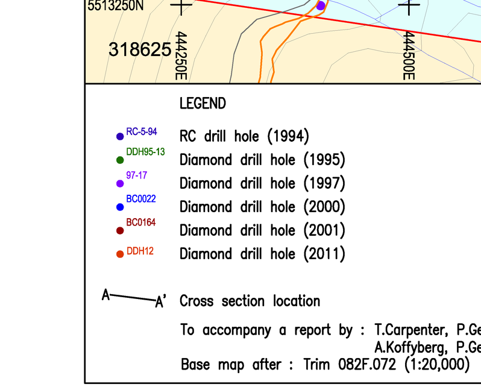<span>1 · scan</span></figure>
        <figure class="hero-shot">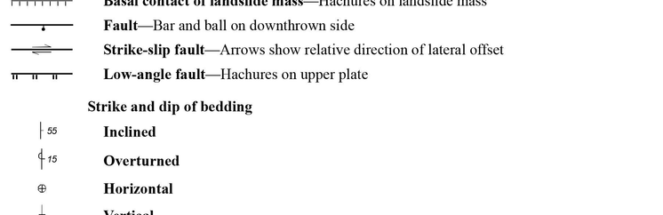<span>2 · locate</span></figure>
        <figure class="hero-shot">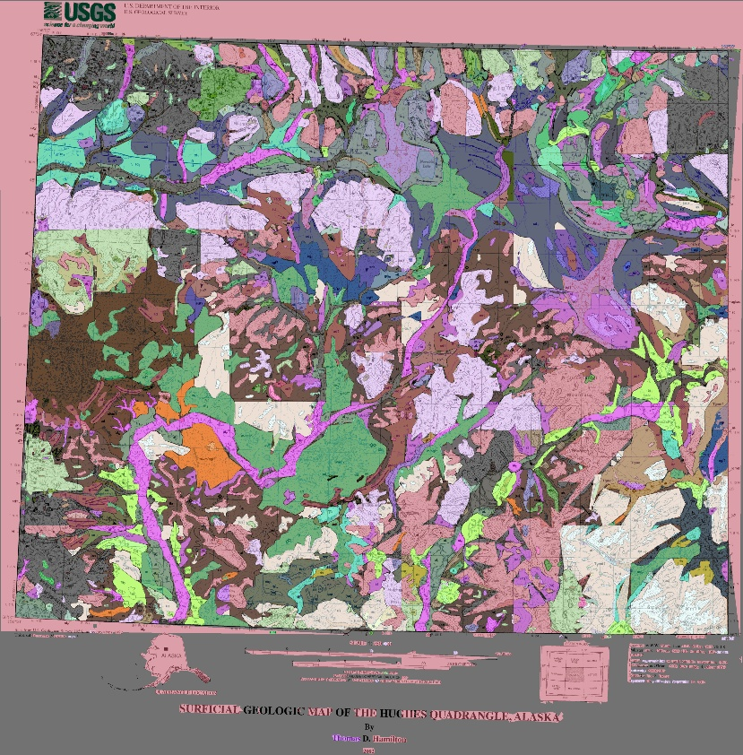<span>3 · trace</span></figure>
        <figure class="hero-shot">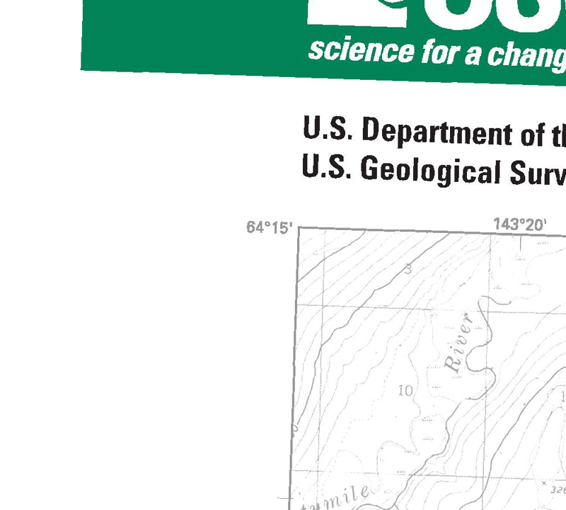<span>4 · place</span></figure>
      </div>
    </div>
  </div>
</header>

<nav class="toc" aria-label="Page sections"><div class="wrap">
  <a href="#does">Six real examples</a>
  <a href="#rcs">RC1–RC8 examples</a>
  <a href="#charts">Measured charts</a>
  <a href="https://huggingface.co/datasets/LockNToad/cartolegend-rc8-gis">Download GIS ↗</a>
</div></nav>

<main>
  <section id="does" class="how">
    <div class="wrap">
      <div class="section-head">
        <div><p class="kicker">Six real maps · input beside result</p><h2>Pictures on the left. Saved data on the right.</h2></div>
      </div>

      <div class="worked">
        <article class="worked-example" id="example-points">
          <div class="example-head">
            <div><span class="example-tag">Example 1 · Black Crystal</span><h3>A printed dot becomes a data record</h3></div>
            <p>Six drill-hole entries were saved. Green marks the 2011 dot.</p>
          </div>
          <div class="example-grid">
            <figure class="example-figure">
              <div class="bbox-demo"><span class="det-box" aria-hidden="true"><em>saved box</em></span></div>
              <figcaption><b>INPUT + SAVED BOX</b> · Black Crystal drill-hole legend.</figcaption>
            </figure>
            <div class="output-panel">
              <p class="output-label">Saved record · entry 6 of 6</p>
              <div class="record" role="group" aria-label="Actual structured output record">
                <div class="record-row"><span>label</span><span>Diamond drill hole (2011)</span></div>
                <div class="record-row"><span>type</span><span>point</span></div>
                <div class="record-row"><span>box</span><span>[194, 412, 205, 425]</span></div>
              </div>
              <p class="output-note">Box center: 3.16 px from the reviewed center.</p>
            </div>
          </div>
        </article>

        <article class="worked-example" id="example-black-canyon">
          <div class="example-head">
            <div><span class="example-tag">Example 2 · Black Canyon</span><h3>A real miss, shown plainly</h3></div>
            <p>Three bedding symbols were printed. None matched.</p>
          </div>
          <div class="example-grid">
            <figure class="example-figure">
              <div class="bbox-demo"><span class="mark-box black-saved" aria-hidden="true"><em>saved: strike</em></span><span class="mark-box black-target-1" aria-hidden="true"><em>reviewed</em></span><span class="mark-box black-target-2" aria-hidden="true"></span><span class="mark-box black-target-3" aria-hidden="true"></span></div>
              <figcaption><b>RED</b> · saved row. <b>GREEN</b> · Inclined, Overturned and Horizontal.</figcaption>
            </figure>
            <div class="output-panel">
              <p class="output-label">Saved record · only returned row</p>
              <div class="record">
                <div class="record-row"><span>label</span><span>strike</span></div>
                <div class="record-row"><span>type</span><span>point</span></div>
                <div class="record-row"><span>box</span><span>[10, 41, 86, 67]</span></div>
              </div>
              <p class="output-note">CHECK · 0 of 3 matched. Inclined was mislabeled; two symbols were missed.</p>
            </div>
          </div>
        </article>

        <article class="worked-example" id="example-polygons">
          <div class="example-head">
            <div><span class="example-tag">Example 3 · Hughes, Alaska</span><h3>Map colors become editable polygons</h3></div>
            <p>Original scan on the left. Saved overlay on the right.</p>
          </div>
          <div class="example-visuals">
            <figure>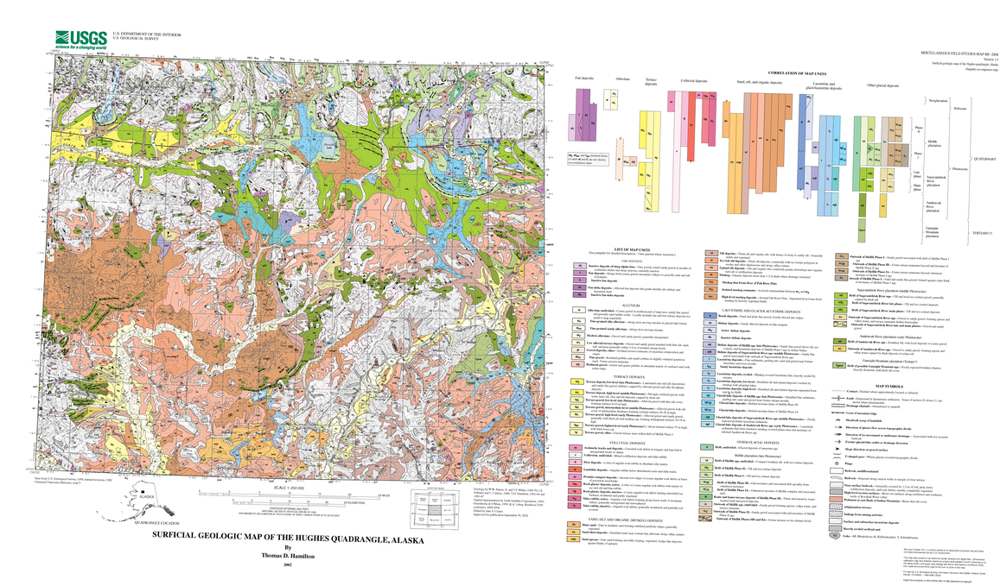<figcaption><b>INPUT</b> · original public USGS scan.</figcaption></figure>
            <figure><figcaption><b>SAVED OVERLAY</b> · bright = assigned; dark = unassigned.</figcaption></figure>
          </div>
          <div class="result-strip" role="group" aria-label="Actual Hughes output counts">
            <div class="result-stat"><b>50</b><span>map-unit labels used</span></div>
            <div class="result-stat"><b>1,329</b><span>editable shapes</span></div>
            <div class="result-stat"><b>41</b><span>areas labeled <code>al</code></span></div>
            <div class="result-stat"><b>1,217</b><span>outline points for <code>al</code></span></div>
          </div>
        </article>

        <article class="worked-example" id="example-frederick">
          <div class="example-head">
            <div><span class="example-tag">Example 4 · Frederick, Maryland</span><h3>One scan becomes 1,042 GIS features</h3></div>
            <p>The right image is the saved overlay, not ground truth.</p>
          </div>
          <div class="example-visuals">
            <figure>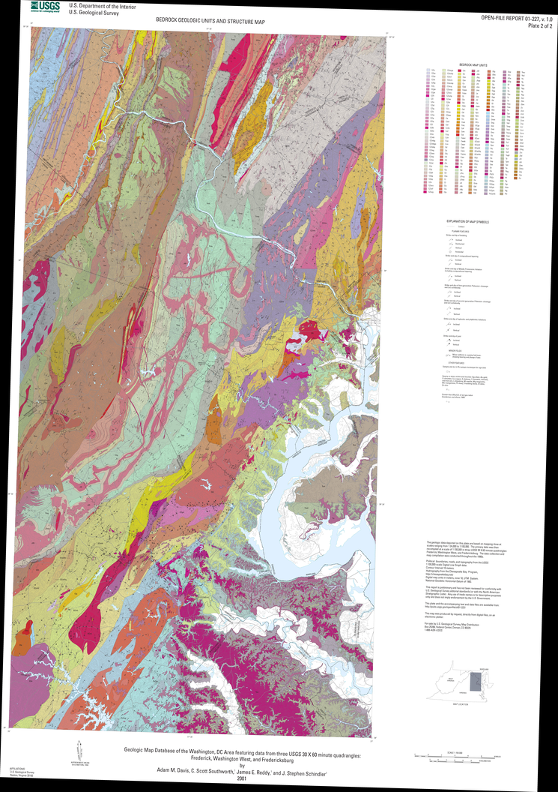<figcaption><b>INPUT</b> · 10,250 × 14,537 source pixels.</figcaption></figure>
            <figure>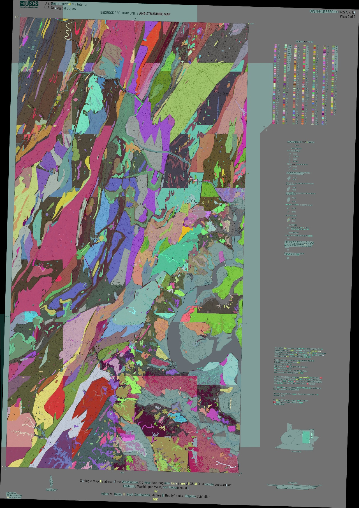<figcaption><b>SAVED OVERLAY</b> · bright = assigned; dark = unassigned.</figcaption></figure>
          </div>
          <div class="result-strip" role="group" aria-label="Actual Frederick output counts">
            <div class="result-stat"><b>2,743</b><span>polygon contours</span></div>
            <div class="result-stat"><b>267</b><span>unit codes</span></div>
            <div class="result-stat"><b>48.78%</b><span>map pixels assigned</span></div>
            <div class="result-stat"><b>1,042</b><span>delivered map-unit features</span></div>
          </div>
        </article>

        <article class="worked-example" id="example-needles">
          <div class="example-head">
            <div><span class="example-tag">Example 5 · Needles, California/Arizona</span><h3>An evaluated success case</h3></div>
            <p>The score belongs to the exact overlay pictured below.</p>
          </div>
          <div class="example-visuals">
            <figure>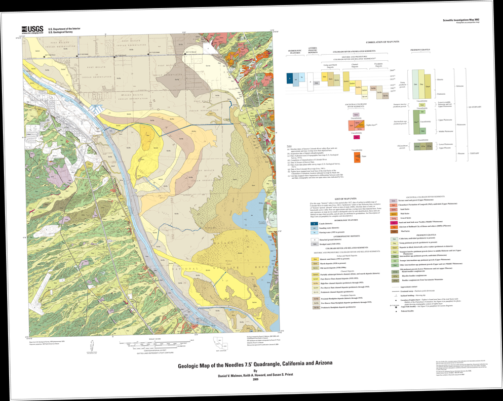<figcaption><b>INPUT</b> · 11,100 × 8,850 source pixels.</figcaption></figure>
            <figure>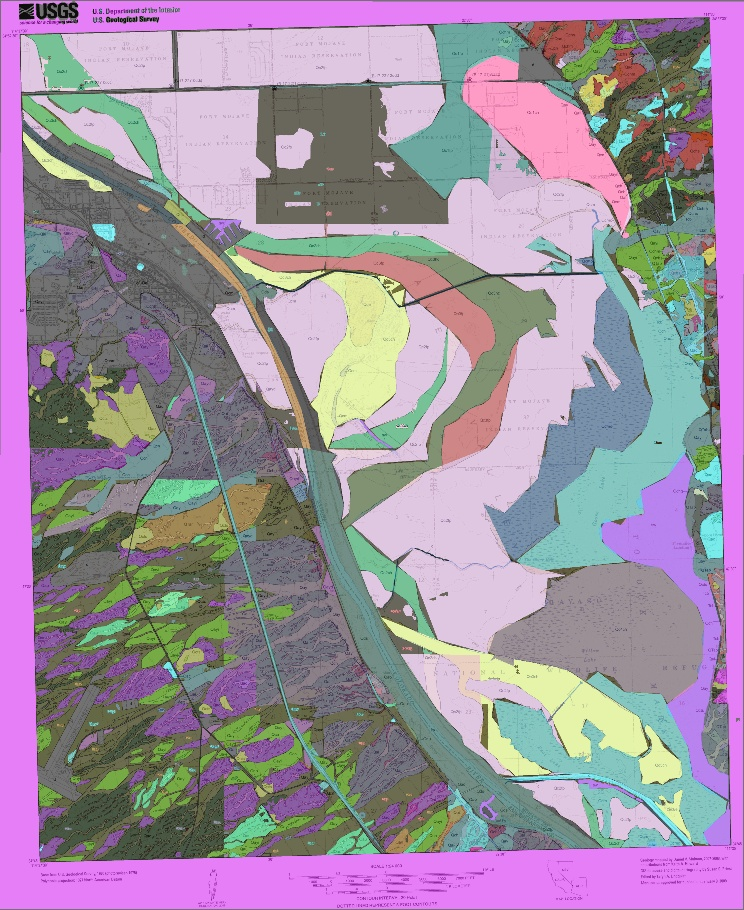<figcaption><b>SAVED OVERLAY</b> · same-stage result used for the score.</figcaption></figure>
          </div>
          <div class="result-strip" role="group" aria-label="Actual Needles output and score">
            <div class="result-stat"><b>716</b><span>polygon contours</span></div>
            <div class="result-stat"><b>33 / 34</b><span>unit codes present</span></div>
            <div class="result-stat"><b>78.63%</b><span>map pixels assigned</span></div>
            <div class="result-stat"><b>66.08%</b><span>pixel F1</span></div>
          </div>
        </article>

        <article class="worked-example" id="example-georef">
          <div class="example-head">
            <div><span class="example-tag">Example 6 · Kechumstuk, Alaska</span><h3>A printed tick becomes a map coordinate</h3></div>
            <p>The printed 64°15′ mark is saved as 64.25° N.</p>
          </div>
          <div class="geo-example">
            <figure><figcaption><b>RAW EVIDENCE</b> · printed <code>64°15′</code> border tick.</figcaption></figure>
            <div class="geo-read">
              <div class="geo-step"><small>Printed</small><b>64°15′</b></div>
              <div class="geo-step"><small>Saved</small><b>64.25° N · 9 border marks</b></div>
              <div class="geo-step"><small>Whole sheet</small><div class="coord-grid"><span class="coord">63.997–64.257° N</span><span class="coord">143.387–142.696° W</span></div></div>
            </div>
          </div>
        </article>
      </div>
    </div>
  </section>

  <section id="rcs">
    <div class="wrap">
      <div class="section-head">
        <div><p class="kicker">Two pictures for every RC</p><h2>RC1 → RC8</h2></div>
        <p class="section-note">Every picture is a real saved input or overlay. Red means rejected.</p>
      </div>
      <div class="visual-key" role="group" aria-label="Status key"><span class="key good">released / current</span><span class="key warn">research / gate</span><span class="key bad">rejected</span></div>

      <div class="rc-list" style="margin-top:22px">
        <article class="rc-card" id="rc1">
          <div class="rc-top">
            <div class="rc-id">RC1</div>
            <div>
              <div class="rc-titleline"><h3>Read point symbols from a legend</h3><span class="status warn">prototype</span></div>
              <div class="answers">
                <div class="answer"><b>WHAT</b><span>Black Crystal: six drill-hole rows saved as JSON.</span></div>
                <div class="answer"><b>WHY</b><span>Simple rows worked; changed layouts broke them.</span></div>
                <div class="score">FIRST PROOF · no safe headline score</div>
              </div>
            </div>
          </div>
          <div class="picture-pair">
            <figure><a class="picture" href="../assets/rc1-black-crystal.png"></a><figcaption><b>Black Crystal</b> · raw legend crop.</figcaption></figure>
            <figure><a class="picture" href="../assets/rc1-snow-shoe.png">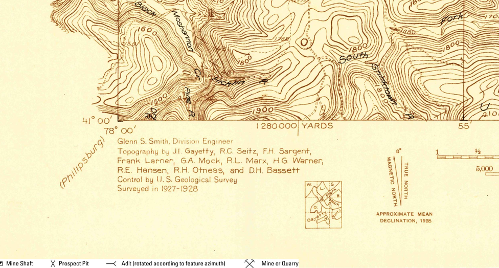</a><figcaption><b>Snow Shoe</b> · a different, harder layout.</figcaption></figure>
          </div>
        </article>

        <article class="rc-card" id="rc2">
          <div class="rc-top">
            <div class="rc-id">RC2</div>
            <div>
              <div class="rc-titleline"><h3>Recover rows missed on the full legend</h3><span class="status">packaged</span></div>
              <div class="answers">
                <div class="answer"><b>WHAT</b><span>Crop a missed symbol row and try that row again.</span></div>
                <div class="answer"><b>WHY</b><span>159 of 167 known rows were recovered.</span></div>
                <div class="score">159 / 167 rows recovered across six splits</div>
              </div>
            </div>
          </div>
          <div class="picture-pair">
            <figure><a class="picture" href="../assets/rc2-strawberry-butte-row.png">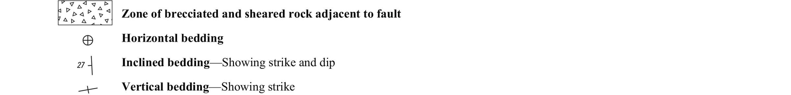</a><figcaption><b>INPUT · Strawberry Butte</b> · symbol row.</figcaption></figure>
            <figure><a class="picture" href="../assets/rc2-peach-springs-row.png"></a><figcaption><b>INPUT · Peach Springs</b> · symbol row.</figcaption></figure>
          </div>
        </article>

        <article class="rc-card" id="rc3">
          <div class="rc-top">
            <div class="rc-id">RC3</div>
            <div>
              <div class="rc-titleline"><h3>Try maps from completely new sources</h3><span class="status warn">source test</span></div>
              <div class="answers">
                <div class="answer"><b>WHAT</b><span>Bettles and House Rock were outside the training sources.</span></div>
                <div class="answer"><b>WHY</b><span>Only 2 more of 106 target symbols were found.</span></div>
                <div class="score">BLIND-1 · 39 → 41 / 106 matches</div>
              </div>
            </div>
          </div>
          <div class="picture-pair">
            <figure><a class="picture" href="../assets/rc3-bettles.png">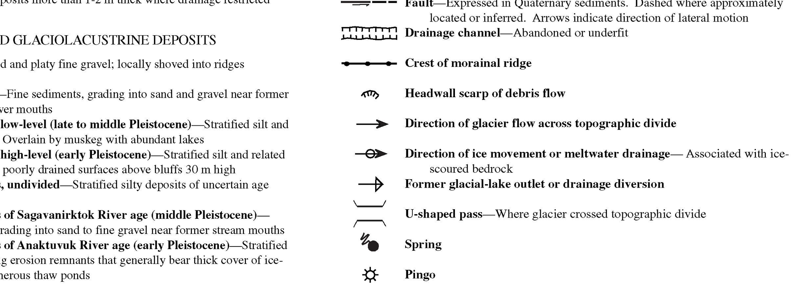</a><figcaption><b>INPUT · Bettles</b> · new source layout.</figcaption></figure>
            <figure><a class="picture" href="../assets/rc3-house-rock.png">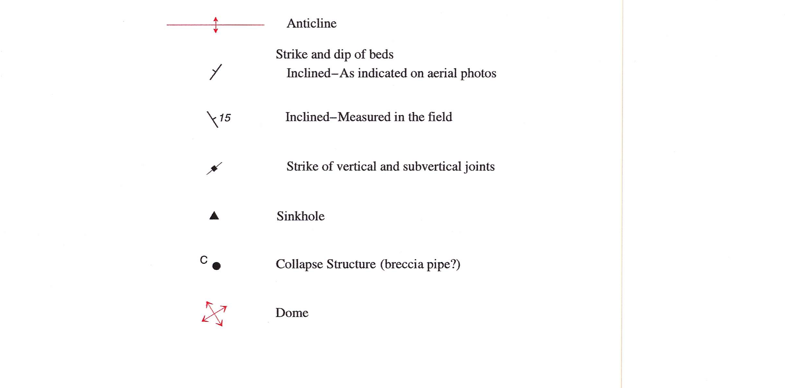</a><figcaption><b>INPUT · House Rock</b> · second source layout.</figcaption></figure>
          </div>
        </article>

        <article class="rc-card" id="rc4">
          <div class="rc-top">
            <div class="rc-id">RC4</div>
            <div>
              <div class="rc-titleline"><h3>Save each mark with its printed label</h3><span class="status">released</span></div>
              <div class="answers">
                <div class="answer"><b>WHAT</b><span>Label + point type + pixel box.</span></div>
                <div class="answer"><b>WHY</b><span>Released, with real successes and real misses.</span></div>
                <div class="score">BLIND-1 · 58/106 · P .563 &nbsp; | &nbsp; BLIND-2 · 45/100 · P .584</div>
                <div class="resource-links"><a class="resource-link" href="https://huggingface.co/LockNToad/cartolegend-qwen2p5vl-7b-lora-rc4">RC4 adapter + results ↗</a><a class="resource-link" href="https://huggingface.co/LockNToad/cartolegend-rc4-modern">Full-sheet files + run guide ↗</a></div>
              </div>
            </div>
          </div>
          <div class="picture-pair">
            <figure><a class="picture" href="../assets/rc4-black-canyon-symbol-row.png"></a><figcaption><b>INPUT · Black Canyon</b> · three printed bedding symbols.</figcaption></figure>
            <figure><a class="picture" href="../assets/rc4-howard-pass-symbol-row.png">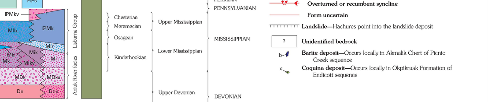</a><figcaption><b>INPUT · Howard Pass</b> · two printed deposit symbols.</figcaption></figure>
          </div>
        </article>

        <article class="rc-card" id="rc5">
          <div class="rc-top">
            <div class="rc-id">RC5</div>
            <div>
              <div class="rc-titleline"><h3>New training made new-map results worse</h3><span class="status bad">5.1–5.3 rejected</span></div>
              <div class="answers">
                <div class="answer"><b>WHAT</b><span>Blind-1 fell 58 → 50; Blind-2 fell 45 → 34.</span></div>
                <div class="answer"><b>WHY</b><span>Rejected. RC4 stayed public.</span></div>
                <div class="score">50/106 · 34/100 · 55/145 &nbsp; | &nbsp; NOT SHIPPED</div>
              </div>
            </div>
          </div>
          <div class="picture-pair">
            <figure><a class="picture" href="../assets/rc5-failed-point.png">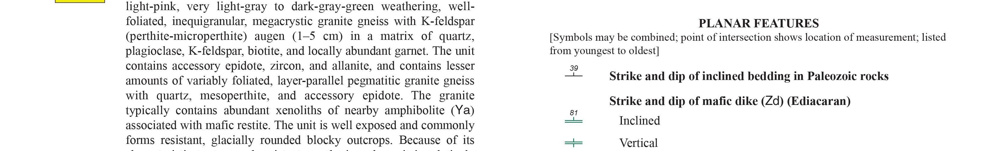</a><figcaption><b>Crown Point</b> · real blind point-symbol example.</figcaption></figure>
            <figure><a class="picture" href="../assets/rc5-hard-negative.png">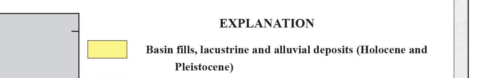</a><figcaption><b>Bartlett</b> · hard-negative swatch that helped reject RC5.</figcaption></figure>
          </div>
        </article>

        <article class="rc-card" id="rc6">
          <div class="rc-top">
            <div class="rc-id">RC6</div>
            <div>
              <div class="rc-titleline"><h3>Clean fake sheets did not transfer</h3><span class="status warn">mixed result</span></div>
              <div class="answers">
                <div class="answer"><b>WHAT</b><span>Clean and degraded synthetic symbol sheets.</span></div>
                <div class="answer"><b>WHY</b><span>The synthetic version was rejected; RC4-Modern still improved.</span></div>
                <div class="score">RC4-MODERN · 52 → 77 / 167 · 0 empty-map false positives</div>
              </div>
            </div>
          </div>
          <div class="picture-pair">
            <figure><a class="picture" href="../assets/rc6-synthetic-clean.png"></a><figcaption><b>Clean synthetic sheet</b> · plausible training input.</figcaption></figure>
            <figure><a class="picture" href="../assets/rc6-synthetic-degraded.png">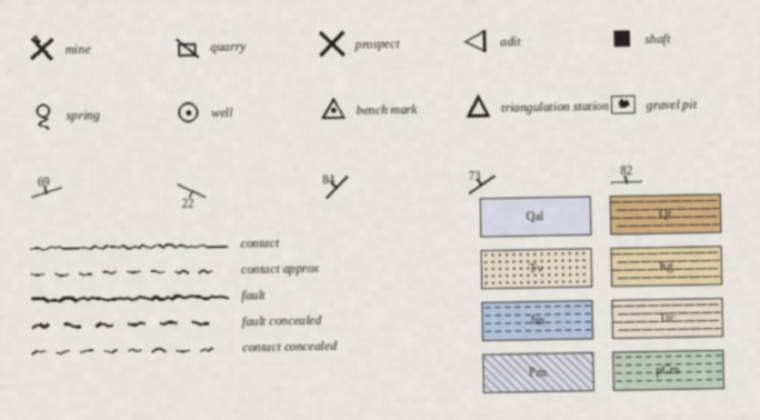</a><figcaption><b>Degraded synthetic sheet</b> · transfer still failed.</figcaption></figure>
          </div>
        </article>

        <article class="rc-card" id="rc7">
          <div class="rc-top">
            <div class="rc-id">RC7</div>
            <div>
              <div class="rc-titleline"><h3>Trace whole-map colored regions</h3><span class="status warn">area tracing</span></div>
              <div class="answers">
                <div class="answer"><b>WHAT</b><span>Hughes: 1,329 editable shapes across 50 labels.</span></div>
                <div class="answer"><b>WHY</b><span>Whole geologic regions could now open in GIS.</span></div>
                <div class="score">347 TARGETS · R .8415 · P .7087 · IoU .172</div>
              </div>
            </div>
          </div>
          <div class="picture-pair">
            <figure><a class="picture" href="../assets/rc7-hughes-polygons.jpg"></a><figcaption><b>OUTPUT · Hughes</b> · every bright shape has an assigned label.</figcaption></figure>
            <figure><a class="picture" href="../assets/rc7-volcanoes-heldout.jpg">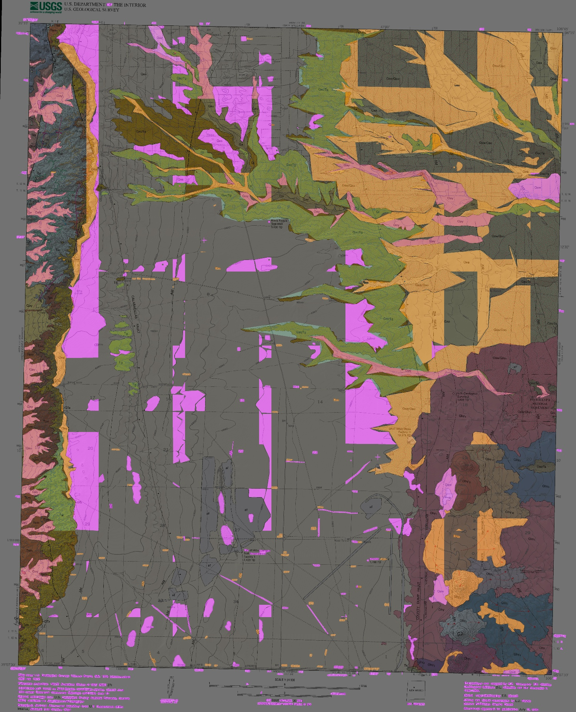</a><figcaption><b>OUTPUT · Volcanoes</b> · a different map layout.</figcaption></figure>
          </div>
        </article>

        <article class="rc-card" id="rc8">
          <div class="rc-top">
            <div class="rc-id">RC8</div>
            <div>
              <div class="rc-titleline"><h3>Export polygons with labels and coordinates</h3><span class="status">GIS delivery</span></div>
              <div class="answers">
                <div class="answer"><b>WHAT</b><span>Frederick: 1,042 features. Needles: 591.</span></div>
                <div class="answer"><b>WHY</b><span>12 GeoJSON files + 12 matching GeoPackages.</span></div>
                <div class="score">R .8732 · P .7426 · IoU .421 &nbsp; | &nbsp; 8,734 polygons</div>
                <div class="resource-links"><a class="resource-link" href="https://huggingface.co/datasets/LockNToad/cartolegend-rc8-gis">Download all 24 GIS files ↗</a><a class="resource-link" href="https://huggingface.co/datasets/LockNToad/cartolegend-rc8-gis/blob/main/SOURCES.md">USGS source list ↗</a></div>
              </div>
            </div>
          </div>
          <div class="picture-pair">
            <figure><a class="picture" href="../assets/rc8-frederick-polygons.jpg"></a><figcaption><b>OUTPUT · Frederick</b> · saved map-unit shapes.</figcaption></figure>
            <figure><a class="picture" href="../assets/rc8-georef-latitude.png"></a><figcaption><b>INPUT · Kechumstuk</b> · printed 64°15′ border mark.</figcaption></figure>
          </div>
        </article>
      </div>
    </div>
  </section>

  <section id="charts">
    <div class="wrap">
      <div class="section-head">
        <div><p class="kicker">Measured, not illustrated</p><h2>Five charts</h2></div>
        <p class="section-note">Counts stay attached to their own frozen test. Rejected work is red.</p>
      </div>
      <div class="chart-grid">
        <article class="chart wide">
          <h3>Point symbols found on new-source maps</h3>
          <p class="chart-sub">Targets found; each bar shows its own denominator.</p>
          <div class="chart-split">
            <div><p class="chart-label">Blind-1 · 106 targets</p><div class="bar-group">
              <div class="bar-row"><span class="bar-label">RC2</span><span class="bar-track"><span class="bar old" style="width:36.8%"></span></span><span class="bar-value">39</span></div>
              <div class="bar-row"><span class="bar-label">RC3</span><span class="bar-track"><span class="bar old" style="width:38.7%"></span></span><span class="bar-value">41</span></div>
              <div class="bar-row"><span class="bar-label">RC4</span><span class="bar-track"><span class="bar best" style="width:54.7%"></span></span><span class="bar-value">58</span></div>
              <div class="bar-row"><span class="bar-label">RC5</span><span class="bar-track"><span class="bar reject" style="width:47.2%"></span></span><span class="bar-value">50</span></div>
            </div>
            </div>
            <div><p class="chart-label">Blind-2 · 100 targets</p><div class="bar-group">
              <div class="bar-row"><span class="bar-label">RC3</span><span class="bar-track"><span class="bar old" style="width:23%"></span></span><span class="bar-value">23</span></div>
              <div class="bar-row"><span class="bar-label">RC4</span><span class="bar-track"><span class="bar best" style="width:45%"></span></span><span class="bar-value">45</span></div>
              <div class="bar-row"><span class="bar-label">RC5</span><span class="bar-track"><span class="bar reject" style="width:34%"></span></span><span class="bar-value">34</span></div>
            </div>
            </div>
          </div>
        </article>

        <article class="chart">
          <h3>RC8 colored-region score</h3>
          <p class="chart-sub">10 sheets · 347 target regions.</p>
          <div class="bar-group">
            <div class="bar-row"><span class="bar-label">Recall</span><span class="bar-track"><span class="bar best" style="width:87.3%"></span></span><span class="bar-value">87%</span></div>
            <div class="bar-row"><span class="bar-label">Precision</span><span class="bar-track"><span class="bar" style="width:74.3%"></span></span><span class="bar-value">74%</span></div>
            <div class="bar-row"><span class="bar-label">IoU</span><span class="bar-track"><span class="bar blue" style="width:42.1%"></span></span><span class="bar-value">42%</span></div>
          </div>
        </article>

        <article class="chart">
          <h3>Same maps: RC7 vs RC8</h3>
          <p class="chart-sub">Same 10 sheets and 347 targets.</p>
          <div class="bar-group">
            <div class="dual-row"><span class="bar-label">Recall</span><span class="dual-bars"><span class="dual" style="width:84.2%"></span><span class="dual new" style="width:87.3%"></span></span></div>
            <div class="dual-row"><span class="bar-label">Precision</span><span class="dual-bars"><span class="dual" style="width:70.9%"></span><span class="dual new" style="width:74.3%"></span></span></div>
            <div class="dual-row"><span class="bar-label">IoU</span><span class="dual-bars"><span class="dual" style="width:17.2%"></span><span class="dual new" style="width:42.1%"></span></span></div>
          </div>
          <div class="legend"><span><i></i>RC7</span><span><i class="new"></i>RC8</span></div>
        </article>

        <article class="chart">
          <h3>What each delivered polygon contains</h3>
          <p class="chart-sub">8,734 polygons · 12 public sheets.</p>
          <div class="bar-group">
            <div class="bar-row"><span class="bar-label">Codes</span><span class="bar-track"><span class="bar best" style="width:100%"></span></span><span class="bar-value">100%</span></div>
            <div class="bar-row"><span class="bar-label">Names</span><span class="bar-track"><span class="bar" style="width:76.1%"></span></span><span class="bar-value">76.1%</span></div>
            <div class="bar-row"><span class="bar-label">Descriptions</span><span class="bar-track"><span class="bar blue" style="width:39.4%"></span></span><span class="bar-value">39.4%</span></div>
            <div class="bar-row"><span class="bar-label">Strict form</span><span class="bar-track"><span class="bar gold" style="width:31.2%"></span></span><span class="bar-value">31.2%</span></div>
          </div>
        </article>

        <article class="chart">
          <h3>Same 99 labels read three times</h3>
          <p class="chart-sub">Divergent units in three 5-pass blocks · 99 units.</p>
          <div class="bar-group">
            <div class="bar-row"><span class="bar-label">Block A</span><span class="bar-track"><span class="bar" style="width:45.5%"></span></span><span class="bar-value">5</span></div>
            <div class="bar-row"><span class="bar-label">Block B</span><span class="bar-track"><span class="bar best" style="width:63.6%"></span></span><span class="bar-value">7</span></div>
            <div class="bar-row"><span class="bar-label">Block C</span><span class="bar-track"><span class="bar blue" style="width:18.2%"></span></span><span class="bar-value">2</span></div>
            <div class="bar-row"><span class="bar-label">Union</span><span class="bar-track"><span class="bar gold" style="width:100%"></span></span><span class="bar-value">11</span></div>
            <div class="bar-row"><span class="bar-label">All three</span><span class="bar-track"><span class="bar reject" style="width:1px"></span></span><span class="bar-value">0</span></div>
          </div>
        </article>
      </div>
    </div>
  </section>


  <section class="method" id="method">
    <div class="wrap">
      <p class="kicker" style="color:#9cddd5">Read before comparing</p>
      <h2>Limits</h2>
      <details style="margin-top:22px">
        <summary>Show the limits</summary>
        <p>RC4 bars use their named new-source tests. RC7/RC8 use 10 public maps and 347 target regions. A filled field can be wrong. Repeated answers can be wrong. Colored overlays are saved outputs, not ground truth.</p>
      </details>
    </div>
  </section>
</main>

<footer><div class="wrap footer-row">
  <span>CartoLegend · scanned geologic maps to GIS</span>
  <span>Public USGS maps · real saved outputs</span>
</div></footer>
